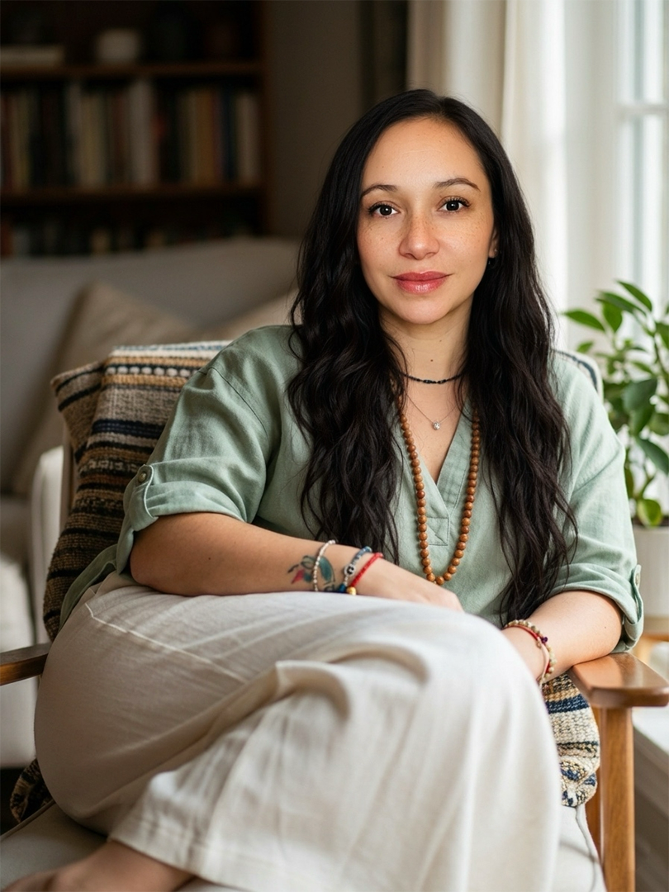
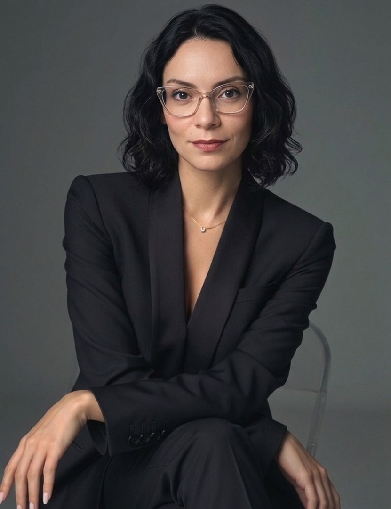

Mujer Alquímica Digital
Roadmap Estratégico
Expansión y Sostenibilidad de tu Ecosistema Digital
Acompañamiento 1:1 para la creación de tu modelo de negocio digital
en paralelo a tu entorno corporativo.
Preparada paraMariale
Expansión y Sostenibilidad de tu Ecosistema Digital
Acompañamiento 1:1 para la creación de tu modelo de negocio digital
en paralelo a tu entorno corporativo.
Diseñar la estructura lógica y financiera de tu negocio sin dejar nada al azar.
Transformar tu historia de quiebre, resiliencia y reconexión en un mensaje magnético de ventas que hable directamente a la mujer que eres tú hace unos años.
Implementar los sistemas digitales para que el negocio funcione con el menor esfuerzo operativo de tu parte.
Para garantizar que mantengas tu enfoque en tu rol actual y en tu proceso de evolución con total ligereza, nos encargamos de la arquitectura y la implementación técnica.
Tú no tendrás que descifrar herramientas ni configurar sistemas. Te entregamos tu estructura digital completamente en orden y lista para funcionar.
Este acompañamiento está diseñado bajo una postura de alta confidencialidad y respeto por tu tiempo actual. Trabajamos mediante un cronograma de entregables claro, asegurando que cada paso que des sea firme, seguro y libre de la ansiedad de la improvisación.
| Duración | 2.5 a 3 meses |
| Modalidad | Acompañamiento 1:1 |
| Inversión total | $3,288 USD* |
| Forma de pago | 3 pagos de $1,096 USD |
| Primer pago | Al confirmar tu lugar |
| Segundo pago | Al inicio de la Fase 2 |
| Tercer pago | Al inicio de la Fase 3 |
Tu historia de reconexión como herramienta de atracción magnética.
Un negocio construido desde tu ritmo, no contra él.
Estructura y automatización que funcionan sin tu presencia constante.

Terapeuta especializada en trabajo somático, Sagrado Femenino y procesos de transformación profunda. Acompaña a mujeres a reconectar con su cuerpo, su verdad y su relación con el dinero desde un lugar real de merecimiento.

Publicista y estratega creativa especializada en marca, comunicación y arquitectura de negocio digital. Ayuda a mujeres a encontrar su voz, estructurar su mensaje y construir un negocio que las represente auténticamente.